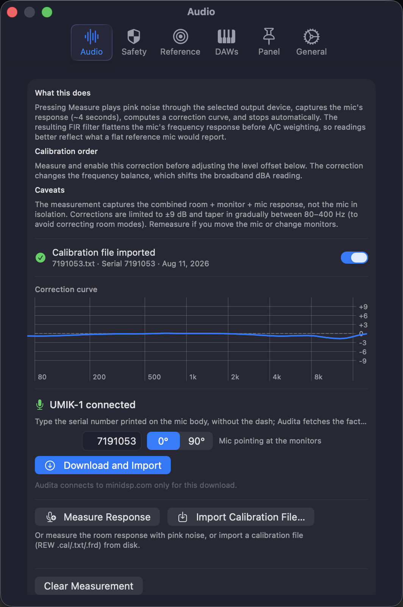

Audita 1.4 is out. The part worth a post is what happens when the microphone you plug in is a miniDSP UMIK-1: you type the serial number printed on its body, and a few seconds later the app is measuring in real dB SPL.
Why the UMIK-1 makes that possible
Most measurement microphones ship with a calibration curve for the model. The UMIK-1 ships with one for the unit. miniDSP measures each microphone that leaves the building and publishes that file against its serial number, in two incidence variants: 0 degree for a capsule pointed at the source, 90 degree for grazing incidence with the mic pointing up.
None of that sounds thrilling until you try to write software against it. Then it is the whole game. I can ask a user for one serial number and get back the response of the exact capsule sitting on their desk, rather than a curve describing the average of a production run.
The second thing the UMIK-1 gets right is the gain. It is a USB microphone with fixed internal gain, so there is no preamp knob between the capsule and the numbers. That makes the sensitivity figure in its calibration file a stable claim about level, not only about tone. An analog measurement mic can tell my software its frequency response through the same kind of file; it cannot tell me what the person at the desk did with the gain trim, and level calibration lives or dies on exactly that.
It is an inexpensive microphone with a serial-numbered measurement behind it, and it is the reason a menu-bar app can make an absolute-SPL claim with a straight face.
Type the serial, skip the meter
With a UMIK-1 selected as the input, Settings → Audio → Step 1 leads with the download. Type the serial (the label prints it with a dash, type it without), pick 0 or 90 degree, and Audita fetches the factory file for that unit, shows what it found (data points, frequency span, serial, sensitivity), and applies the curve as the mic correction: inverted, limited to ±9 dB, and running ahead of the A and C weighting filters.
The same sheet offers Set level calibration from the file. Tick it and the level offset comes from the sensitivity figure too, which means the whole calibration is done in one pass, with no SPL meter in the loop. For every other microphone, that step is still a cross-check against an iPhone running the free NIOSH Sound Level Meter app: play noise, compare the two readings, nudge the offset until they agree. It works, it is what I have recommended since 1.0, and it is still the answer for an ECM8000. It is simply not something a UMIK owner needs to do any more.

The 30 dB detour
The sensitivity figure is one line in the file header: Sens Factor =-1.5520dB, SERNO: 7191053. The obvious reading is the pistonphone convention that the rest of the app already used, where 94 dB SPL is the reference: offset equals 94 minus the figure. I wired that up, played pink noise, and Audita read about 30 dB below the reference meter.
The figure is not referenced to 94 dB. miniDSP defines it at 100 dB SPL with the 24 dB of digital gain their Windows-side workflow engages, and macOS never applies that gain. So the conversion is 124 − Sens Factor: a file reading -1.55 dB becomes an offset of 125.6 dB, which looks alarming next to the 94 dB default right up until you know why it is 30 dB away from it.
I did not want to ship arithmetic I had reasoned my way into, so it went to hardware: a UMIK-1 at the listening position, pink noise, the NIOSH SLM app as the reference, the two meters agreeing inside about 2 dB. The constant, the clamp, and the codec are pinned in the test suite now, together with the two failure signatures I earned along the way: roughly 24 dB low means the digital-gain term was dropped, roughly 30 dB low means the 94 dB convention crept back in.
Applying it is fenced accordingly. The absolute level only lands when a UMIK-1 is the selected input by name, because a level claim belongs to one specific device, and never under a System Default input picker. UMIK-2 files import the same way for frequency correction, but the level conversion is calibrated for the UMIK-1, so on a UMIK-2 the offset comes from the cross-check.
The input slider is part of the calibration
macOS treats a USB microphone's input volume as a user control, and a sensitivity figure is only true at the position it was defined at, which is full volume. That is a real trap: one drag of a slider in System Settings and an absolute meter is quietly wrong.
Audita watches the control instead of trusting it. With a UMIK calibration active it adds the shortfall back in real time, so readings stay absolute at any slider position, and it says so in Settings and in the menu bar popover whenever it is compensating. Full volume still gives the most headroom, and the import sheet offers a one-click way back to it.
Every other measurement mic
Cal-file import is not UMIK-only. Audita reads the REW-style .cal, .txt and .frd files that miniDSP, Dayton and most measurement-mic vendors ship, so an ECM8000 or an EMM-6 through an interface gets its frequency correction from the manufacturer's curve instead of a pink-noise sweep of your room. Some analog files carry a Sensitivity figure in dBFS as well; Audita can use it as a level reference, off by default, with the cross-check as the arbiter, because that figure is tied to whatever preamp gain the file was measured at and the file cannot tell you what that was.
One quiet advantage of the file path: a correction derived from a published curve re-designs itself when your interface changes sample rate. A correction measured with pink noise is only valid at the rate it was measured at, and 1.4 now says so on screen instead of leaving it bypassed in silence.
Knowing whether you are still calibrated
Calibration is not a state you reach, it is a state you drift out of. So Settings → Audio now opens with three status lines: where the level offset came from and whether it belongs to the input you have selected, whether the mic correction is genuinely active, and when this rig last passed a self-check. The menu bar popover carries the same summary in one line.
Run Self-Check plays pink noise through the selected output at your calibrated reference, measures it back through the mic, and reports the delta with a pass or fail against your own tolerance band. A result belongs to the pair it measured, this mic into these monitors, so swapping either end reads as unverified until you check that path too, and switching back to a rig you already verified reads verified again. Results age out after 90 days.
Three measurement fixes, and one of them changes your numbers
1.4 also carries the results of a math audit I ran against my own measurement chain. None of these came in as user reports, which is precisely why they are worth writing down.
- Dose was under-counted on dynamic material. The accumulator was being fed the same exponentially smoothed value the display uses, so level swings averaged themselves away before they reached the arithmetic. It now uses the energy average of every sample in each 100 ms interval. Steady tones read as before; real programme material was low by roughly 20 to 35%. If your dose reads higher after updating, that is the fix, not a regression.
- Impulse counters missed short peaks and inflated sustained ones. About four in five audio buffers were never examined, so a dropped headphone often left no trace, while a long loud passage counted ten times a second. Every buffer now feeds detection, and the counters count events: one per excursion, re-armed 2 dB below the threshold.
- The mic-correction filter did not match the curve it displayed. The FIR was built from the wrong segment of the impulse response, so the applied filter typically gutted the mid and high band while the curve on screen looked fine. The construction is fixed and regression-tested against the displayed curve, but the filters older versions stored cannot be salvaged: they are disabled on first launch and Settings asks for one new Measure run. Importing your mic's calibration file clears that request too.
The last one is the one to act on. If you had mic correction switched on before 1.4, re-measure or import the file, then run the self-check and you will know where you stand.
Audita 1.4 is a free update for existing licenses: Check for Updates in the menu, or download at headroomstudio.dev/audita. New licenses are $19.99, one time, with a 7-day trial, macOS 14 or later. Full release notes →